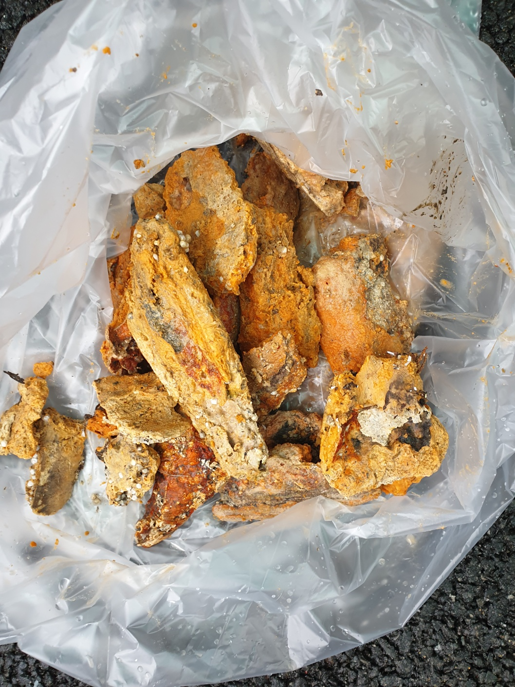
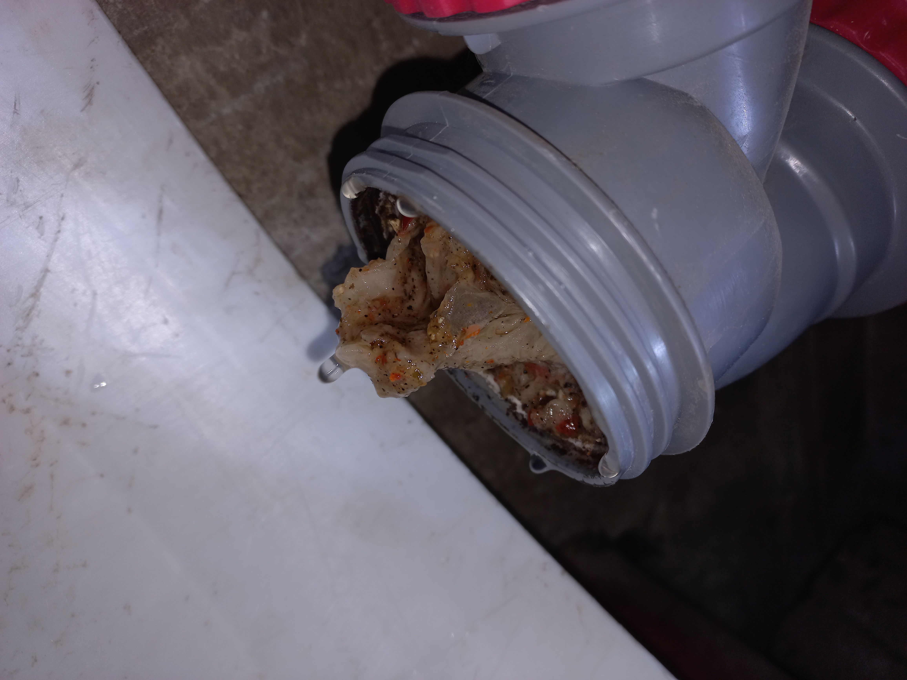
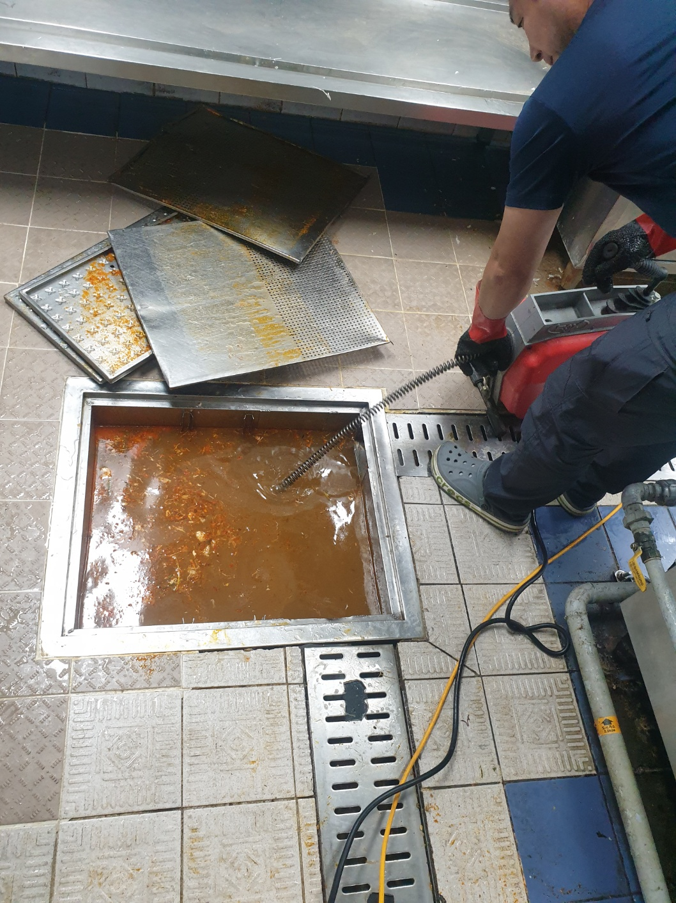
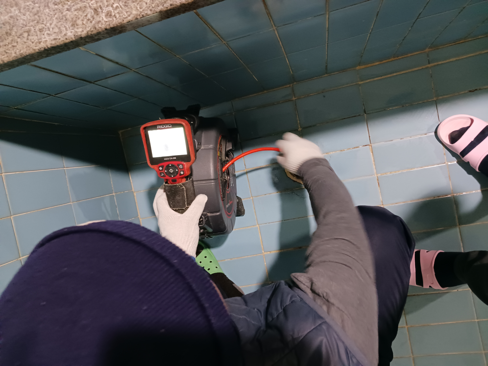

STEP 02
하수구 상태 점검
배수 속도와 역류 여부를 확인해 막힌 구간을 좁힙니다.
바닥 하수구의 역류와 악취는 이물질, 슬러지 또는 깊은 배관 막힘이 원인일 수 있어 막힌 구간을 확인하고 작업합니다.

욕실과 바닥 하수구의 역류·악취·배수 불량 문제를 현장 상태와 사용 환경에 맞춰 확인한 뒤 필요한 작업 범위를 안내합니다.
현장 상태와 작업 범위를 먼저 확인하고 적합한 방법으로 진행한 뒤 마무리 상태까지 꼼꼼하게 점검합니다.

배수 속도와 역류 여부를 확인해 막힌 구간을 좁힙니다.

막힘 위치에 따라 스프링, 석션 또는 고압세척 장비를 선택합니다.

충분한 물을 흘려 배수 상태와 재역류 여부를 확인합니다.
 STEP 05 · 작업 전 상세
STEP 05 · 작업 전 상세
STEP 06 · 작업 완료한 가지 작업만이 아니라 다양한 현장에서 지키는 인성클린의 공통 운영 원칙입니다.
사업자 정보를 바탕으로 상담부터 작업 완료까지 책임 있게 운영합니다.
현장 상태와 작업 범위, 예상 비용을 안내하며 변동 사항이 생기면 진행 전에 미리 말씀드립니다.
업종과 현장 상태에 맞는 장비와 작업 방법을 선택해 진행합니다.
작업 결과를 함께 확인하고 필요한 관리 방법과 후속 상담을 안내합니다.
작업 항목에 따라 최대 1년 A/S를 지원합니다.
도급업자 배상책임 담보로 작업 중 발생할 수 있는 예기치 못한 사고에 대비합니다.
작업 전 안내한 대상 문제를 해결하지 못한 경우 해당 작업비를 받지 않습니다.
※ 보험 적용 및 보상 여부와 범위는 사고 내용, 가입 조건 및 보험 약관에 따라 달라질 수 있습니다.
※ 미해결 기준과 적용 대상을 작업 전에 안내하며, 비용이나 작업 내용에 변동이 생기면 진행 전에 미리 말씀드립니다.
※ A/S 적용 여부와 기간은 업종, 작업 내용 및 현장 상황에 따라 달라질 수 있습니다.
악취는 트랩 문제나 배관 내부 오염 또는 부분 막힘과 관련될 수 있어 현장 상태를 함께 확인해야 합니다.
추가 사용 시 오염수가 더 퍼질 수 있으므로 가능한 한 물 사용을 줄이고 점검을 받는 것이 안전합니다.
막힘 위치와 배관 상태에 따라 스프링 장비 내시경 점검 고압세척 중 적합한 방식을 선택합니다.
서울 서초구 서초동 및 인근 지역의 출장 상담이 가능합니다.